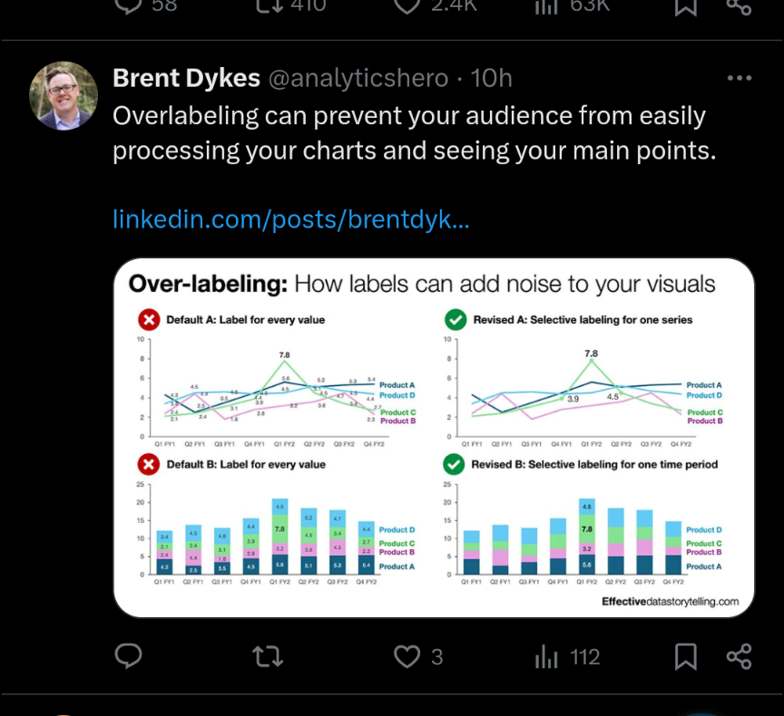
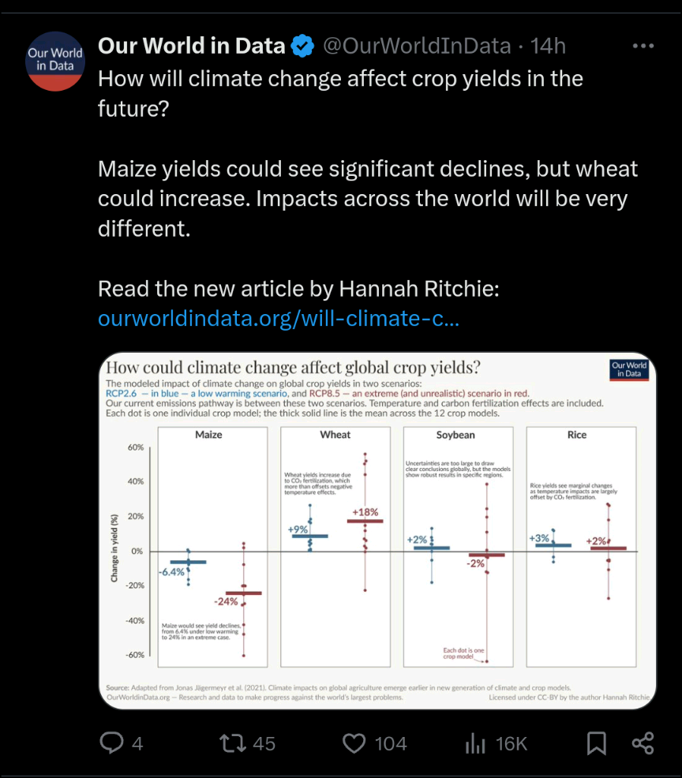

《好設計，4個法則就夠了》，簡單的設計法則讓作品變得更美觀
如何讓我的資料視覺化作品看起來更加美觀且專業？
這個問題經常在我製作統計圖表時，躍上心頭。對平面設計一竅不通的我在追尋這個問題的答案時，《好設計，4個法則就夠了》（The Non-Designer`s Design Book, 4th Edition）這本書吸引了我這個Non-designer的目光，我毫不猶豫地翻開了它。這篇文章中，我將會分享在書中學到的概念，並展示如何將其應用到我的資料視覺化作品上。
鍛鍊你的設計眼光
Few people realize that exceptional outcomes are almost always achieved by people with higher-than-average standards.
- Shane Parish, Clear Thinking
此書在介紹設計法則時，會以大量的實例展示如何應用設計概念，實際的展現這些設計概念的效能。在實例中，時常伴隨著一個小區塊，寫著「鍛鍊你的設計眼光」，其中的文字會提醒你去主動的觀察設計法則是如何被應用，有意識的去觀察應用了設計技巧後作品是如何變的優秀。
對優秀的作品一無所知，要怎麼設計出優秀的作品？對自己作品所應達到的標準如果很低，怎能產出傑出的作品？作者Robin Williams想告訴讀者，培養對設計作品的品味，了解傑出作品所應具備的特質，應是從Non-designer前進Designer的旅途中必不可少的要素。
因此，我決定將「鍛鍊設計眼光」的練習融入日常生活。舉例來說，當很多人漫無目的滑著Instagram或Threads時，我會在社群網站上追蹤資料視覺化設計師或相關的主題：


希望能透過不斷的接觸設計作品來培養自己對視覺化作品的眼光。
4個設計法則
就如中文書名所提示的，本書的主軸放在4個設計法則，分別是相近(proximity)、對齊(alignment)、對比(contrast)、重複(repetition)。
相近(Proximity)
「相近」指的是將相關的物件放在一起，揭示它們是屬於同一個群體，組成視覺單元，用以顯示出你作品中的結構。如果只是隨意的將各種物件放在一起，會看起來毫無章法，缺乏專業感。更嚴重的是，若將不相關的物件放得太近，會給讀者它們有關聯的錯覺，傳遞錯誤的資訊。
用下面我做的這張圖表為例：
{kind=link}
透過把相關的元素靠在一起，可以很明確的看出來有兩個大區塊，分別說明2023年的發電結構及歷年四種能源的發電量。在右邊這個區塊，我也使用相近原則區分出不同的能源。
對齊(Alignment)
「對齊」則是要我們注意文字或圖形對齊的方式，增加作品的整齊感。作者提到，初學者常在整個作品中都使用置中對齊，因為文字長短不一，容易在文字左右兩邊產生錯落感，看起來會比較雜亂。使用一致的對齊方式，能讓畫面上產生一條隱形的線，讓整體畫面顯得更井井有條。
以下面這個長條圖為例：
{kind=link}
你可以看到，類別標籤和圖中的其他文字對齊的方式不同，而且因為各種類別的字數不同，所以類別標籤的錯落感很強烈。
調整對齊方式後：
{kind=link}
因使用與標題和註解相同的對齊方式，你可以感受到左側有一條隱形的線，使得整體畫面變得更加和諧一致。
重複(Repetition)
「重複」指的是在作品中多次使用相同的視覺元素，以強調結構，增加一致性。可以使用重複的顏色、形狀、自型、大小等元素，提高整體作品的一致性，提升視覺吸引力。
舉例來說， 下面的這兩張圖表，我都用了同樣的顏色來代表男性及女性的資料：
{kind=link}
{kind=link}
對比(Contrast)
「對比」指的是對作品中的物件製造對比，用以凸顯某些物件的不同。當作品一部分特別的不同，我們的目光很容易朝向這些突出的物件而去，能夠達到引導目光、強調重點的效果。
用剛剛的長條圖為範例：
你可以看到，有兩種類別的長條我用了不一樣的顏色，這是用來強調數量特別多的兩個類別。透過突出的顏色能加深讀者的印象，更能傳遞資料中所隱含的資訊。
身為設計門外漢的我，在讀這本書的時候，驚呼連連。因書中許多作品，在應用設計原則後，真的變好看許多。希望我也能朝著Designer前進一點，做能令人驚呼的作品。